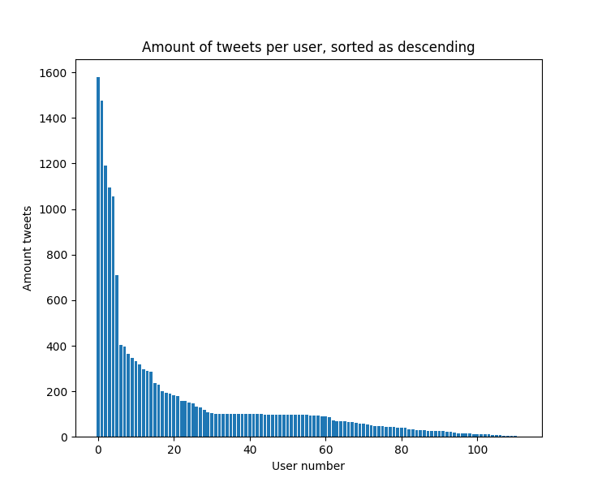
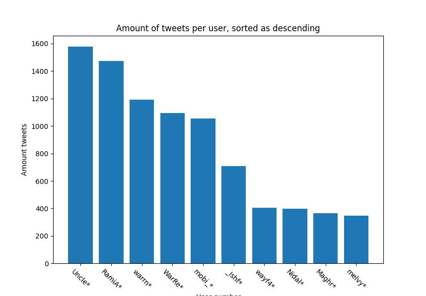
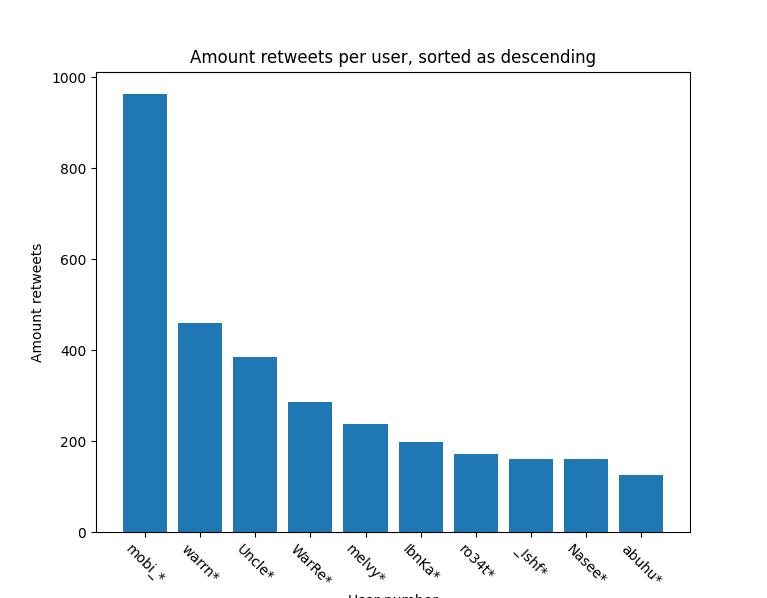
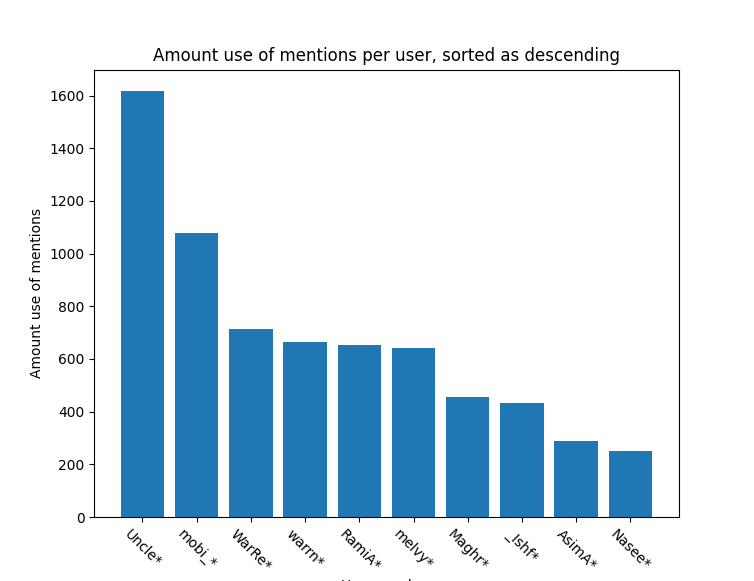
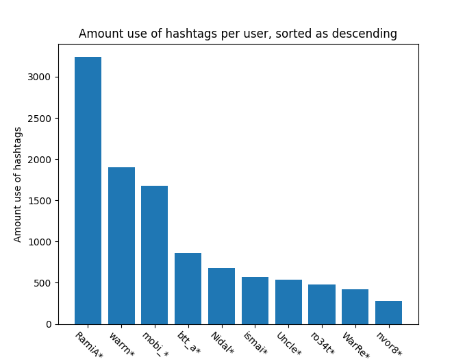

The amount of tweets per user:
Strongly suggest following the power law. Let's scale with logarithm.
Seems to descent "almost" linearly.
Let's see the partial names of top 10 users by Tweets
Let's see the partial names of top 10 users by retweets
Top 10 users by the use of mentions
Top 10 users by the use of hashtags
